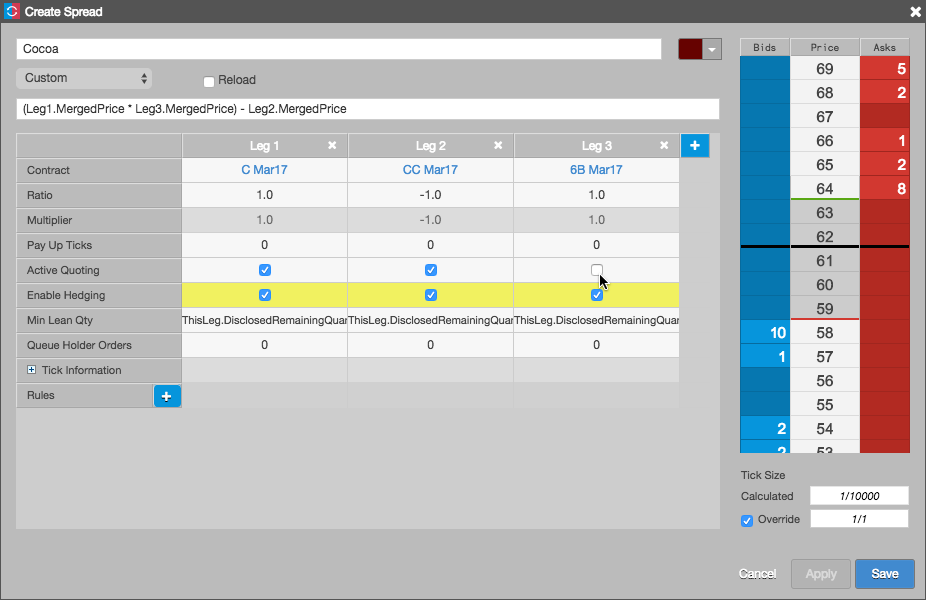
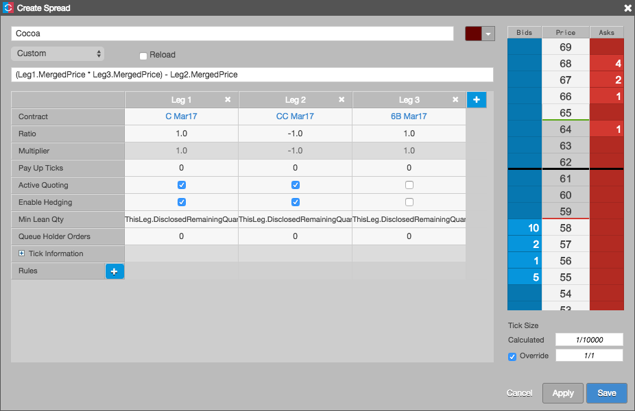

Autospreader allows users to designate one or more legs of a spread solely as pricing components. This enables a user to configure and trade a spread with an instrument that is neither quoted nor hedged and doesn't require position limits. For example, you can configure a spread with Mar17 contracts for ICE Futures U.S. Cocoa (CC) and London Cocoa (C) as the spread legs, and British Pound Futures (6B) as a component in calculating the spread price.
To configure legs as price components:
Click Create in the opened Autospreader widget and configure the synthetic spread definition parameters.
Select contracts for each leg of the spread.
Uncheck Active Quoting for the leg used as a pricing component.
The Enable Hedging options are displayed and flash yellow for all legs.

Uncheck Enable Hedging for the same leg.

When the spread in this example is launched and traded, the 6B Mar17 leg is neither quoted nor hedged, but Autospreader includes the instrument when calculating the spread price.
Preview the spread price, adjust the ticking if needed, and click Save.